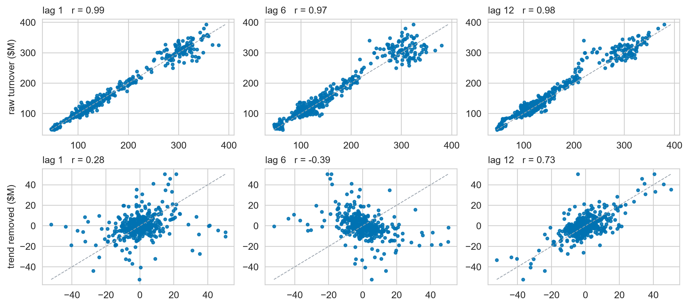

ACF, Decomposition & Features
Day 1 · Lecture 2 · fpppy Ch 2.8–2.9, Ch 3, Ch 4
2026-09-03
An even \(m\) needs the 2×\(m\)-MA to stay centred
Twelve months have no middle month: their average sits at \(t + \tfrac{1}{2}\). Average two adjacent 12-MAs to land back on \(t\):
\[\hat{T}_t = \tfrac{1}{24}y_{t-6} + \tfrac{1}{12}\sum_{j=-5}^{5} y_{t+j} + \tfrac{1}{24}y_{t+6}\]

\(y_{t-6}\) and \(y_{t+6}\) are the same calendar month, so between them it still gets \(\tfrac{1}{12}\), like every other month. The season cancels exactly.
The MA trend stops six months short of the present

# Dataset: Victorian retail takeaway turnover (spine = D.spine(), last 5 years / 60 obs)
fig, ax = plt.subplots(figsize=(10, 3.3))
P.trend_overlay_plot(
spine, {"2×12-MA trend": P.centred_ma(spine["y"], 12)},
ax=ax, tail=60, colors=[P.ORANGE], shade_gap="2×12-MA trend",
ylabel="turnover ($M)", title="Spine, last 5 years")- The first and last \(m/2\) observations get no trend estimate
- The missing one is exactly where you forecast from
Only seasonal strength separates the portfolio

# Dataset: 148 Australian retail monthly series (allr = D.retail_all())
def stl_features(g):
y = np.log(np.clip(g["y"].to_numpy(), 1e-6, None))
r = STL(y, period=12, robust=True).fit()
R, T_, S = np.asarray(r.resid), np.asarray(r.trend), np.asarray(r.seasonal)
vr = np.var(R)
return pd.Series({
"trend_strength": max(0.0, 1 - vr / np.var(T_ + R)),
"seasonal_strength": max(0.0, 1 - vr / np.var(S + R)),
})
allr = D.retail_all()
feat = allr.groupby("unique_id")[["y"]].apply(stl_features, include_groups=False).reset_index()
fig, ax = plt.subplots(figsize=(9.5, 4.3))
P.feature_scatter(feat, ax=ax, marks=[(hi, P.ORANGE, "most seasonal"),
(mine, P.BLACK, "the spine"),
(lo, P.PINK, "least seasonal")],
title="148 Australian retail series, both axes on the full 0 to 1 scale")Reminder: a statistic moves on its own

Every one of these series is pure noise, so the true \(r_1\) is \(0\). The spread is the measurement, not the series. Back